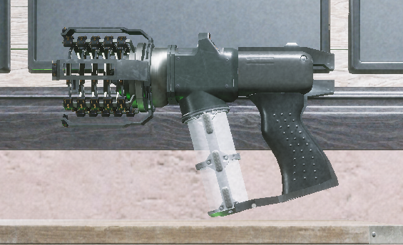

Сборщик эктоплазмы

Это важный предмет.С его помощью вам необходимо собрать эктоплазму и загрузить её в держатель ловушки призрака.Как только вы загружаете достаточно образцов эктоплазмы, держатель откроет доступ к ловушке.